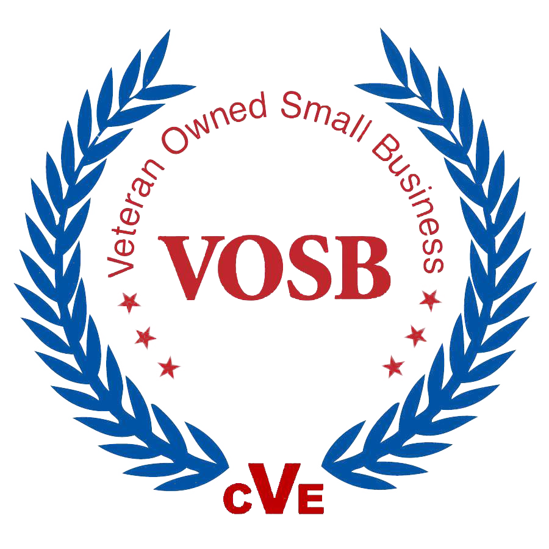

About Us
Giedd Enterprise Tree Service has been serving North Mississippi with pride and dedication since 2021. We are your trusted local partner for all your tree service needs. With our commitment to excellence and personalized service, we strive to deliver exceptional results and make a positive impact on our community.
At Giedd Enterprise, we understand the unique needs and values of North Mississippi. We are experienced professionals who take the time to listen to your specific requirements and tailor our services to meet your expectations. Make a request today, we have you covered!
Why choose Giedd Enterprise Tree Service?
- Local Expertise: As a business rooted in North Mississippi, we are familiar with the region's culture, environment, and needs. We are dedicated to providing solutions that resonate with our community.
- Exceptional Quality: We hold ourselves to the highest standards of quality and craftsmanship, ensuring that you receive top-notch service every time.
- Personalized Service: Your satisfaction is our priority. We take a personalized approach to every project, offering customized solutions that fit your specific needs.
- Reliability and Trust: Our reputation is built on trust and reliability. We strive to exceed your expectations and earn your confidence with every interaction.

Our Services
- Tree Removal
- Pruning
- Stump Grinding
- Disaster Relief
- Debris Hauling
- Right of Way clearing
- Government contract work
- Cabling and Bracing (please inquire)
Government Services
At Giedd Enterprise, we understand the unique needs and expectations of government agencies. Our business is equipped to support government contract work in various ways, providing valuable services and expertise to help agencies achieve their goals efficiently. Here's how we can assist you:
- Compliance with Regulations: We strictly adhere to government regulations and standards, ensuring ethical practices, transparency, and integrity in all our work.
- Expertise in Specialized Areas: Our team offers niche services and specialized knowledge that can make a significant impact on government projects, adding value and ensuring success.
- Quality Assurance and Safety Standards: We prioritize quality and safety in every project. Our rigorous quality assurance and safety measures guarantee reliable services and products that meet government standards.
- Timely Delivery and Performance: Meeting strict timelines is crucial in government contracts. We pride ourselves on delivering services and products on time, ensuring projects are completed according to schedule.
- Cost-Effective Solutions: We provide competitive pricing and efficient resource management to offer cost-effective solutions without compromising quality, helping government agencies optimize their budgets.
- Ability to Scale: Our business can scale up or down as needed, adapting to the requirements of different projects, whether large or small in scope.
- Strong Communication and Reporting: Clear communication and regular reporting are essential for successful collaboration. We maintain open lines of communication with government representatives and provide detailed updates on project progress.
- Past Performance and References: We have a successful track record of completing government contracts and are happy to provide references and case studies to demonstrate our capabilities.
- Diverse Supplier Status: We qualify as a diverse supplier, veteran and minority-owned, helping government agencies meet diversity goals.
- Collaboration and Partnerships: Our strong relationships with other businesses and subcontractors enable us to take on larger or more complex government projects, providing additional resources and expertise.
At Giedd Enterprise, we're positioned as a strong candidate for government contract work, contributing to the success of government projects while supporting the needs of your community. Let us partner with you to achieve your agency's goals efficiently and effectively. Contact us today to learn more about how we can support your next project.